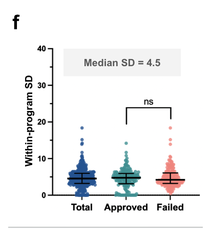
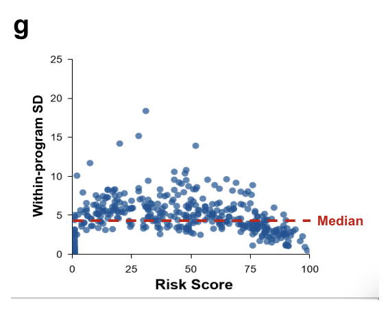

We Ran the Same Drug One Hundred Times
Post 4 of 8 on SAISHO’s clinical-outcomes prediction model.
Here is a question that anyone who has deployed a language model in a decision loop already knows to ask, and that a surprising amount of published work does not answer.
If you run it again, do you get the same answer?
For a system meant to inform whether a company commits a hundred million dollars to a clinical program, this is not a technical footnote. If the score moves by twenty points between runs, the score is not a measurement. It is a mood.
So we ran the whole benchmark one hundred times.
39,100 Evaluations
Every one of the 391 programs was evaluated in 100 fully independent runs. Not 100 samples from a cached intermediate state: each run repeats the complete pipeline, all four domain assessments and the reconciliation, from the top.
That is 39,100 complete evaluations. Every number I have quoted in this series, and every number in the paper, is a median over a program's 100 runs rather than a single draw.
I want to be clear that the stochasticity is deliberate and not a defect we tolerated. Sampling is what lets the board explore competing mechanistic hypotheses instead of committing to the first plausible story, and it is what surfaces edge-case liabilities that a greedy decode walks straight past. The self-consistency literature has been making this point since 2023: you get better reasoning from sampling and aggregating than from one confident pass. The cost is variance, and if you are going to accept the cost you owe the reader a measurement of it.
The Answer Is 4.5 Points

Median within-program standard deviation: 4.5 points on the 0 to 100 scale.
There was no significant difference between approved and failed programs, which is itself worth noting. A system that was more decisive about the drugs it liked than the drugs it disliked would be showing you an artifact of its own priors. This one is not.
For context, the median gap between the approved and failed groups is 43.5 points. A 4.5-point run-to-run wobble against a 43.5-point separation is a signal-to-noise ratio of roughly ten to one. That is what makes the discrimination result in post 3 mean anything.
Where the Variance Lives Is the Interesting Part

This is the panel I would put on a slide if I only got one.
Dispersion is not uniform across the score range. Programs near the low and high extremes are evaluated consistently. Programs in the intermediate range, roughly 25 to 75, show visibly more run-to-run variability.
The system is most consistent exactly where the evidence supports a clear conclusion, and least consistent exactly where a human review board would argue.
I do not want to over-read this. Part of the effect is mechanical: the scale is bounded at 0 and 100, and a program whose true assessment sits near an endpoint has less room to vary in one direction. Some of the compression at the extremes is an artifact of the ruler rather than a property of the reasoning. The paper says so.
But the effect is larger than the bounding alone would produce, and the shape is right. If you gave four human specialists an unambiguous drug they would converge quickly, and if you gave them a borderline one they would not. Reproducing that is a mild sign that the reasoning is tracking evidence quality rather than generating noise.
It also has a direct operational use: the dispersion is a free confidence interval. A program scoring 52 with an SD of 12 is a fundamentally different object from a program scoring 52 with an SD of 3, and only one of them should be presented to a committee as an assessment.
Consistency of the Reason, Not Just the Score
There is a second kind of variance that the standard deviation cannot see, and it took us a while to realise it was the one that mattered more.
Because each run repeats the full pipeline independently, the primary liability named in the final reconciled report can also change between runs. The score could be perfectly stable at 71 across 100 runs while the system cycles through three different explanations for why.
So we defined Assessment Consistency: the frequency with which a specific primary liability recurs across the 100 final reports. When a SAISHO report says "hepatotoxicity (39/100)", it means hepatotoxicity was named as the program's primary liability in 39 of 100 independent evaluations.
That number does work that the risk score cannot. It separates "this program has a liability and we are confident we know which one" from "this program has a liability and we are not sure what it is". Both are useful outputs. They are not the same output, and reporting only an aggregate score would collapse them.
For sitaxentan, which post 5 covers in detail, the core liabilities recur at 100/100 and the downstream injury mechanism at 92/100. That is a system saying the same thing every time. It is a very different signal from 39/100, and a reader deserves to be able to tell them apart.
What This Does Not Show
This is a stability measurement under one specific configuration: these model versions, these prompts, this tool access, this orchestration. It is not a claim about stability in general. Change the underlying frontier model and this measurement has to be repeated from scratch, because nothing guarantees it transfers.
It also says nothing about accuracy. A system can be beautifully consistent and consistently wrong. Low variance is a precondition for trusting a score, not evidence that the score is right.
And the ontology-based matching that Assessment Consistency relies on is automated text analysis over the reports, not blinded human adjudication. It searches the prioritized rationale for affirmative liability statements, accounting for concept direction and local negation. It is reproducible, which is the property I wanted. It is not the same thing as a panel of experts reading every report.
Next week: whether the system fails drugs for the reasons they actually failed.
More on the platform at saisho.ai.